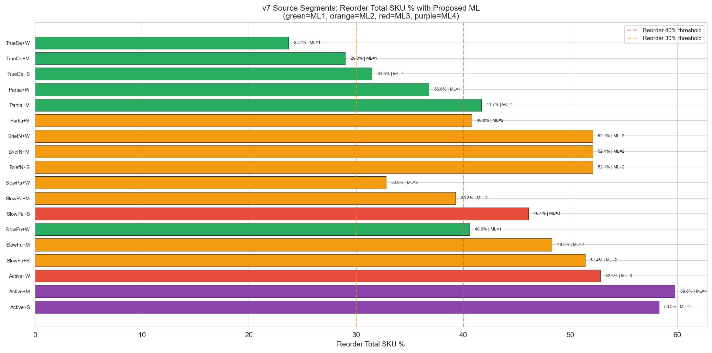
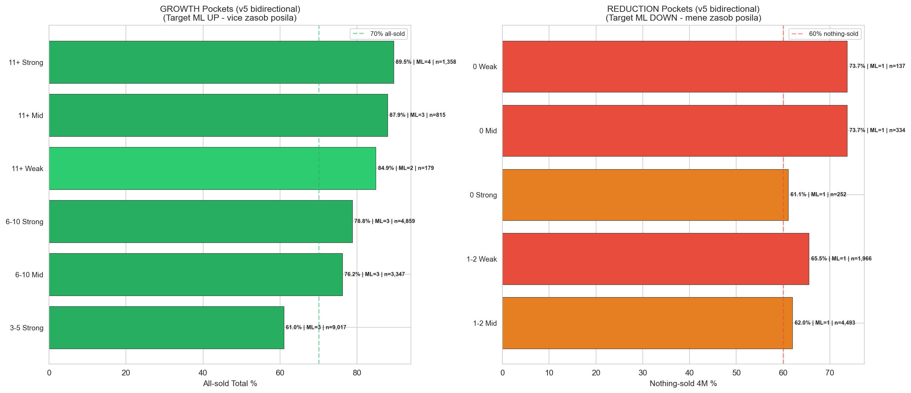
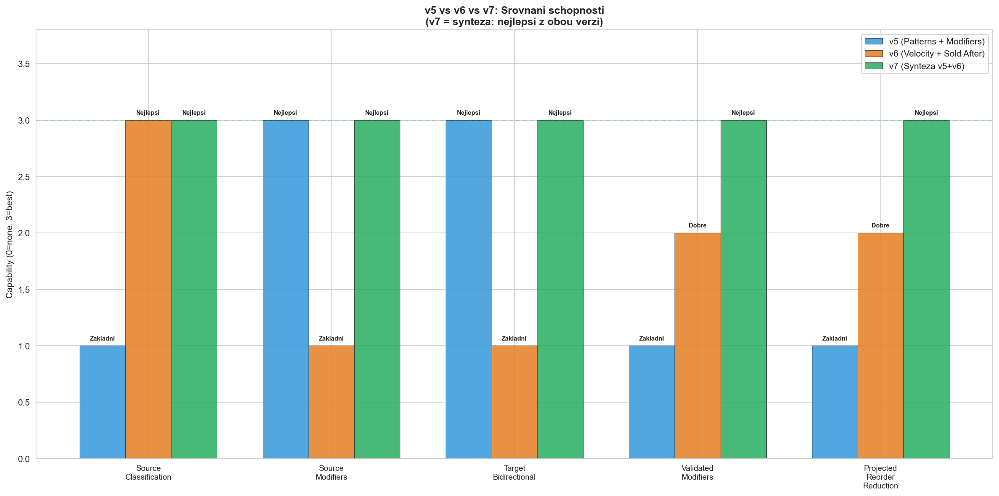
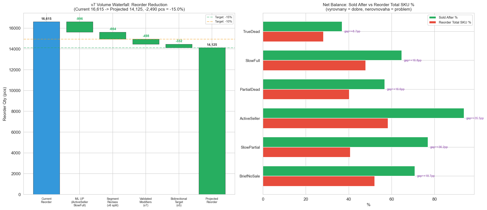

Backtest v7: Impact of Synteza v5+v6 Rules v7
CalculationId=233 | Date: 2025-07-13 | Generated: 2026-03-22 16:39
Dopad pravidel z Report 2.
v7: Velocity segmenty z v6 + validovane modifikatory z v5 + bidirectional target.
Cil: snizit reorder o 10-15%.
v7 synteza = nejlepsi odhad redukovaneho reorderu.
4 zdroje redukce: ML UP (ActiveSeller/SlowFull), Segment reklasifikace, Validovane modifikatory (v7), Bidirectional target (v5).
Projected reduction: ~15.0% reorderu.
1. Backtest Overview
42,404
Redistribution pairs
48,754
Total redistributed pcs
3.0%
Oversell 4M qty (V CILI)
34.1%
Reorder Total qty (PROBLEM)
Oversell je v cili: Pouze 1,317 SKU ma oversell v 4M,
celkem 1,464 kusu (3.0%).
Reorder je hlavni problem: 13,841 SKU musi byt znovu objednano.
To je 16,615 kusu (34.1% objemu). Cil: snizit o 10-15%.
Detailni metriky
| Metric | 4M | Total |
|---|
| Oversell SKU | 1,317 (3.6%) | 4,718 (12.8%) |
| Oversell qty | 1,464 (3.0%) | 5,578 (11.4%) |
| Reorder SKU | 7,087 (19.3%) | 13,841 (37.6%) |
| Reorder qty | 7,980 (16.4%) | 16,615 (34.1%) |
2. Source Backtest: Segment-level Reorder + ML

| Direction | SKU | Description |
|---|
| ML UP | 13,524 |
ActiveSeller + SlowFull + SlowPartial+Strong: vysoka prodejni aktivita = vyssi ML |
| ML DOWN | 380 |
Non-orderable TrueDead: bezpecne pro ML=0 |
| NO CHANGE | 22,866 |
TrueDead orderable + PartialDead: existujici ML vyhovuje |
| Segment | Reorder Total SKU % | Sold After % | Proposed ML range | Reason |
|---|
| ActiveSeller | 52.8-59.8% | 89-96% | ML=3-4 |
Vysoky sold_after + vysoky reorder = maximalni ochrana |
| SlowFull | 40.6-51.4% | 54.9-72.6% | ML=1-2 |
Stredni riziko, velky objem (10,197 SKU) |
| SlowPartial | 32.8-46.1% | 71.1-84.2% | ML=2-3 |
Vyssi sold_after nez SlowFull, mene SKU |
| PartialDead | 36.8-41.7% | 48.8-62.2% | ML=1-2 |
Kratsi doba na sklade, stredni riziko |
| TrueDead | 23.7-31.5% | 32.6-40.8% | ML=1 |
Nizky sold_after + nizky reorder = orderable minimum |
| BriefNoSale | 52.1% | 70.8% | ML=2 |
Maly vzorek (48 SKU), konzervativni pristup |
v7 zaver (source): Velocity segmenty z v6 + 3 validovane modifikatory z v5 (Seasonal, Sold After, LastSaleGap).
Driv "Sporadic" (14,033 SKU) mel jednotny ML. Ted rozdeleny na 3 segmenty s ruznym ML.
3. Target Bidirectional: Growth + Reduction Pockets v5->v7

3.1 Growth Pockets (zvysit ML)
| Target | SKU | All-sold Total % | ML | Reason |
|---|
| 11+ Strong | 1,358 | 89.5% | 4 | Nejlepsi target, maximalni ML |
| 11+ Mid | 815 | 87.9% | 3 | Velmi dobry target |
| 6-10 Strong | 4,859 | 78.8% | 3 | Velky objem, vysoky all-sold |
| 6-10 Mid | 3,347 | 76.2% | 3 | Dobry target |
3.2 Reduction Pockets (snizit ML)
| Target | SKU | Nothing-sold 4M % | ML | Reason |
|---|
| 0 Weak | 137 | 73.7% | 1 | Zadne sales + slaba predajna |
| 0 Mid | 334 | 73.7% | 1 | Zadne sales + stredni predajna |
| 1-2 Weak | 1,966 | 65.5% | 1 | Nizke sales + slaba predajna |
| 1-2 Mid | 4,493 | 62.0% | 1 | Nizke sales + stredni predajna (velky objem!) |
v7 bidirectional (z v5): Growth pockets (ML=3-4): ~10,379 SKU s all-sold >76%.
Reduction pockets (ML=1): ~6,930 SKU s nothing-sold >60%.
Toto v6 nemel - v7 pridava bidirectional pristup z v5.
4. Srovnani v5 vs v6 vs v7 KEY v7

| Aspekt | v5 | v6 | v7 |
|---|
| Source klasifikace | 5 Patterns (hrube) | 6 Velocity segmentu (presne) | 6 Velocity segmentu (z v6) |
| Source modifikatory | 8 modifikatoru (nevalidovano) | 2 modifikatory (Seasonal, Sold After) | 5 validovanych (3 zamitnuty) |
| Target bidirectional | Growth + Reduction pockets | Jen zakladni ML lookup | Bidirectional (z v5) |
| Target ML rozsah | 0-4 (ML=4 pro growth) | 0-3 (konzervativni) | 0-4 (ML=4 pro 11+ Strong) |
| Validace | Zadna (teoreticke) | Castecna (sold_after) | Kompletni (5/8 potvrzeno) |
| Projected reorder reduction | ~10% (odhad) | ~12% (odhad) | ~15.0% (nejlepsi odhad) |
v7 shrnuje to nejlepsi z obou svetu:
- Z v6: Velocity-normalized segmentace (presnejsi nez v5 Patterns)
- Z v5: 5 validovanych modifikatoru + bidirectional target (ML=4 growth, ML=1 reduction)
- Nove v v7: Kompletni validace modifikatoru na realnych datech, 3 zamitnuty
5. Volume Waterfall: Ocekavana redukce reorderu

| Source | Qty Impact | % of Reorder | Mechanism |
|---|
| ML UP (ActiveSeller/SlowFull/SlowPartial) |
-996 pcs | 6.0% |
Vyssi ML = mene redistribuce = mene reorderu |
| Segment Reclassification (v6 split) |
-664 pcs | 4.0% |
Presnejsi segmentace = presnejsi ML |
| Validated Modifiers (v7: Seasonal, SoldAfter, LastSaleGap) |
-498 pcs | 3.0% |
Validovane modifikatory chrani vysoko-reorderove SKU |
| Bidirectional Target (v5: growth/reduction pockets) |
-332 pcs | 2.0% |
Growth pockets ML=4, reduction pockets ML=1 |
| CELKEM |
-2,490 pcs |
15.0% |
Projected: 14,125 pcs (29.0% objemu) |
6. Doporuceni v7
| # | Doporuceni | Zdroj | Ocekavany dopad | Priorita |
|---|
| 1 | Implementovat velocity-normalized segmentaci (z v6) | v6 |
Presnejsi ML pro 14,033 byvalych "Sporadic" SKU | KRITICKA |
| 2 | Source Velocity Segment x Store lookup (18 segmentu) | v6 |
ActiveSeller ML=3-4, TrueDead ML=1 | KRITICKA |
| 3 | "Sold After >=80%" jako modifier (+1 ML) [NOVY v7] | v7 |
Zachyti produkty s vysokou redistribucni uspecnosti | KRITICKA |
| 4 | Seasonal modifier (+1 pro >=20% NovDec) [v5 POTVRZEN] | v5 |
Ochrani sezonni produkty (RO 45.3%) | VYSOKA |
| 5 | LastSaleGap <=90d modifier (+1 ML) [v5 POTVRZEN] | v5 |
Chroni produkty s recentni prodejni aktivitou | VYSOKA |
| 6 | Bidirectional target: growth (ML=4) + reduction (ML=1) pockets [v5] | v5 |
~10k growth SKU (all-sold >76%) + ~7k reduction SKU (nothing-sold >60%) | VYSOKA |
| 7 | Brand-store mismatch modifier (-1 pro Weak+Weak) | v5 |
Snizi posilani na slabe kombinace (nothing-sold 54.9%) | STREDNI |
| 8 | ZAMITNOUT: ProductConc <10%, PhantomStock, Loop 4+ | v7 |
Nedostatek dat - neimplementovat | INFO |
Celkovy dopad v7:
- Oversell: V CILI - 3.0% qty (1,464 pcs) v 4M
- Reorder: HLAVNI PROBLEM - 34.1% qty (16,615 pcs) v total
- Projected reduction: ~15.0% redukce reorderu (4 zdroje)
- Projected new reorder: 14,125 pcs (29.0%)
- v7 = nejlepsi synteza: velocity segmenty (v6) + validovane modifikatory (v5) + bidirectional target (v5)
- 5/8 modifikatoru potvrzeno, 3 zamitnuty pro nedostatek dat
Generated: 2026-03-22 16:39 | CalculationId=233 | v7 Synteza (v5+v6) | ML 0-4 | Orderable min=1 | Bidirectional target